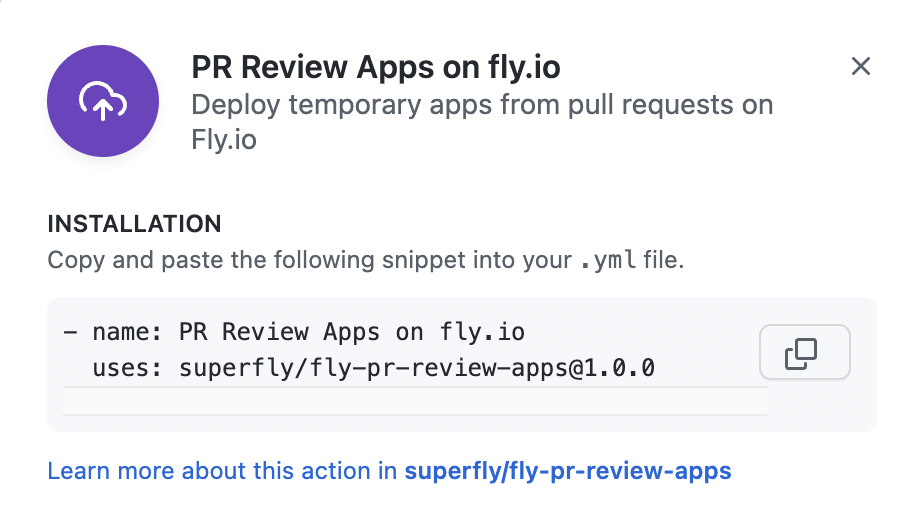
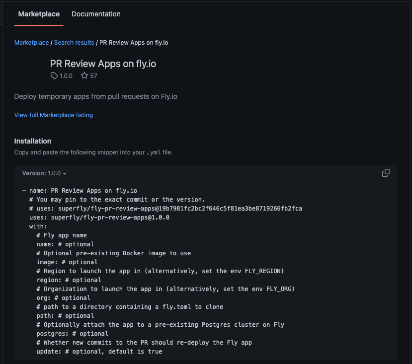
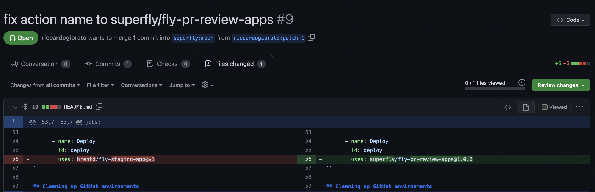

12/100 Days of Code
Paper Trader
Fly.io CI/CD
- Yesterday, I added a Github Action that allowed for automatic build and deployment to Fly.io once the main branch receives a merge request. However, this build and redeploy doesn’t happen when there’s a pull request, which means that there could be deployment issues that won’t be caught until it hits production environment.
- To prevent this problem, I added a new Github Action that builds and deploys on pull request. Luckily there was an existing Github Action that I could utilize. Implementing this required more work than I initially anticipated though:
- When trying to install the action from Github Marketplace, it didn’t offer the customization that I needed: 
- Then when I manually try to add the action by creating a new workflow on Github, it creates it on the
mainbranch and the.ymlsyntax still isn’t all complete: 
- This led me to utilize the basic example from the Github repository for the action, but that also had issues:
- The name of the action is outdated, being called
brentd/fly-staging-app@v1, which left me confused about how the this action is utilized in the example. I checked if others had this issue by checking the Issues and Pull Requests tabs, and found that there’s already an open PR regarding this issue. Hopefully it gets accepted and merged. 
- The name of the action is outdated, being called
- After adjusting the example and customizing my options, I tried to utilize the action but encountered a few errors:
- Without a name for the app, the action is supposed to set one based on the default option
Defaults to pr-{number}-{repo_org}-{repo_name}.However, I gotpr-{number}-null-null, and there is an open issue about it at the time of writing this. - Another issue is that the action had another error log related to having two active apps in an organization as I was building a temporary app in the same organization as the production app.
... Error failed to get app: Could not find App "paper-trader-pr15" ... Error To create more than 2 apps please add a payment method. https://fly.io/dashboard/paper-trader/billing - To fix the naming issue, I decided to just give it a name following the repo instructions of
myapp-pr-$. For the 2 apps issue, I created a new organization in myfly.ioaccount and had the action create the temporary build deploy there by updating the action environment variable to beenv: FLY_ORG: paper-trader-test.
- Without a name for the app, the action is supposed to set one based on the default option
- After that, the build and deploy on PR worked! But another feature of this action was not working properly - when the PR is closed, the action destroys the fly app and removes the github environment. Unfortunately, the Github environments are not being removed.
- Looking up the error, there was this issue and the discussion mentioned it happens when there are permission issues.
Error: Resource not accessible by integration - Then I remembered a comment in the action that handles deleting Github environments…
name: Clean up GitHub environment uses: strumwolf/delete-deployment-environment@v2 if: $ with: # ⚠️ The provided token needs permission for admin write:org token: $ environment: pr-$ - So I created a new token that does have
admin write:orgpermissions!
- Looking up the error, there was this issue and the discussion mentioned it happens when there are permission issues.
- Unfortunately, after getting passed the permissions error, a new one popped up
- This one appears to be related to the wrong naming convention for the environments? I will have to do more digging into it tomorrow. If I’m unable to find a solution I’ll probably remove the action that cleans up Github environments and just manually delete them to move on for now.
deactivating deployments in environment pr-16 Error: Not Found
- This one appears to be related to the wrong naming convention for the environments? I will have to do more digging into it tomorrow. If I’m unable to find a solution I’ll probably remove the action that cleans up Github environments and just manually delete them to move on for now.
Adding User Sessions
- Most of my day was spent trying to figure out the Github actions, but did briefly jump back to my JWT issue. Latching on to my assumption from yesteday about Discord authorization failing so no token it returned, a quick solution was to only utilize the JWT object if it’s valid.
const decodedToken = decodeToken(token) // decodeToken is a function from react-jwt
const username = decodedToken !== null ? decodedToken.username : "Invalid"
Next Steps
- Spend a little more time with the Github action, then go back to working on user session